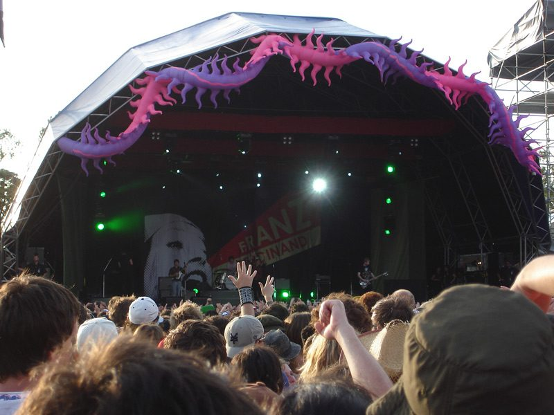

Final round of Big Day Out acts announced



Promoters Lees and West have returned with the third and final announcement for Australia’s biggest summer music festival. While it will be little consolation for the disappointed music fans that missed out on tickets to the sold out shows around the country, it adds a solid range of rock, dance and hip hop to what was already an epic lineup.
On the dance front we’ll be getting Digital Primate, and old hand in the Australian techno scene who has been making music since 1995, as well as Mark Murphy, another long-serving Australian DJ who has been riding the recent wave of the popularity of electro. The Big Day Out will also be hosting a surprise appearance from Keith Flint, member of the seminal dance act The Prodigy, who will be teaming up with DJ Heavy G for a set that will presumably feature plenty of Keith’s infamous showmanship and crazy stage antics.
When it comes to hip hop, a massive range of acts have been added to the bill with the latest announcement. Fans can look forward to live performances from Aussie supergroup Foreign Heights, featuring Trey, Maya Jupiter and Nick Toth, along with TZU and Macromantics. Expect DJ sets from Sir-Virve and P-Money, and reggae specialist Luciano will also be performing.
Rock fans also have plenty to be excited about with The Vines, Snowman, Sick Puppies, Gersey, Ground Components and Dan Kelly & the Alpha Males also added to the lineup.
Local additions have also been made to each city, check the Big Day Out website for details.